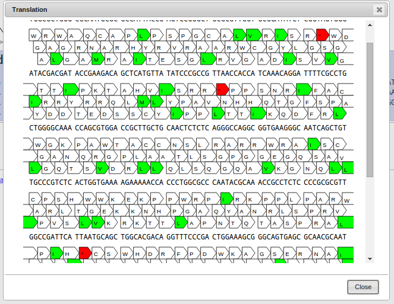
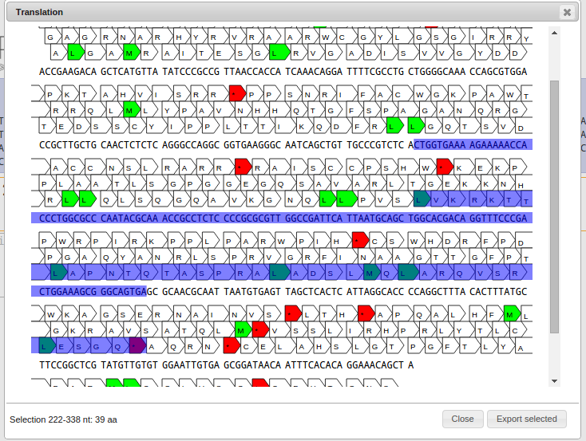
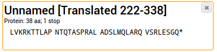
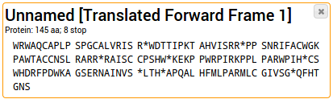
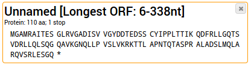

This page is part of the GeneWarrior Documentation. Go to the main site of GeneWarrior
See also What is Translation?
Now you have a couple of options on how to proceed. Let's take a look at them one by one.
If you're unsure which reading frame to choose, select this tool. It will open up a new window, where you can inspect
your sequence in detail and see all three forward frames.

The top row shows your nucleotide sequence, the bottom three rows show the three forward reading frames. Every arrow
denotes a three-nucleotide codon.
Codons colored in green are start codons, red denotes a stop codon.
Click on a codon to select the start of your sequence, click again on a codon in the same frame to select the end of
your sequence.

On the bottom right a button named "Export selected" appears. By clicking it, the selected protein sequence
gets exported to your project.

Stop codons are written as asterisks (*). They are ignored for any further analysis such as alignments.
Instead of selecting the start and the end by hand, you can also Shift-Click on a codon and the selection is
automatically extended
to the most upstream start codon and the next downstream stop codon. This makes it easy to select an open reading
frame (ORF) quickly.
If you know beforehand which frame you want to use to translate your sequences, choose the appropriate Frame
directly (e.g. "Forward 1" for Frame 1). This translates the
entire DNA sequence to the corresponding protein sequence, without taking start and stop codons into special
consideration.

The sample sequence from above was translated using Frame 1.
It's also possible to select reverse frames (e.g. "Reverse 1"); this is essentially a shortcut of taking the
Reverse Complement of the sequence and translate the resulting sequence using Forward Frame 1.
The easiest way is to let GeneWarrior make a best guess. This is done by automatically selecting the longest open
reading frame (ORF)
on all three forward and all three reverse reading frames.
If no ORF can be found (e.g. for short sequences) a warning is returned.

The sample sequence from above was translated using the "Best guess"-Tool, resulting in the longest possible
ORF.
The details on which subsequence was selected is added to the name.
For an explanation about Translation see What is a Translation?